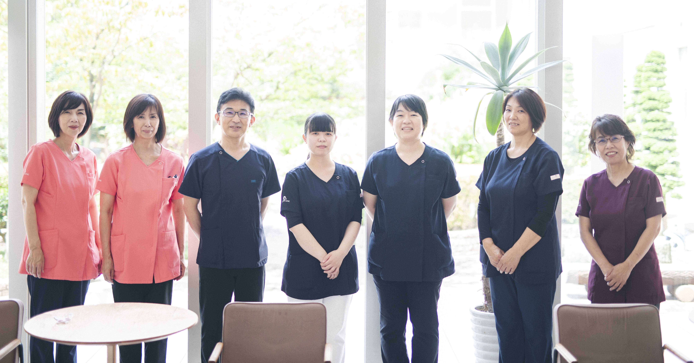
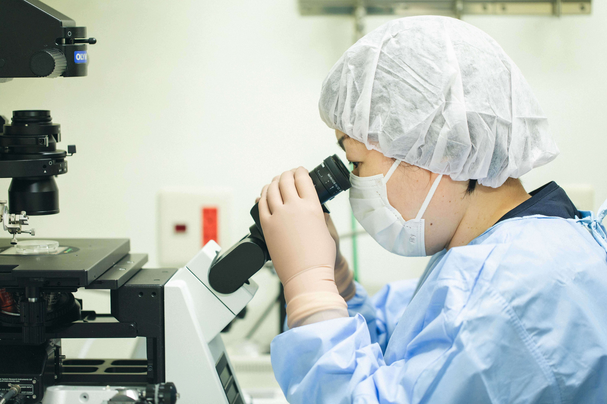
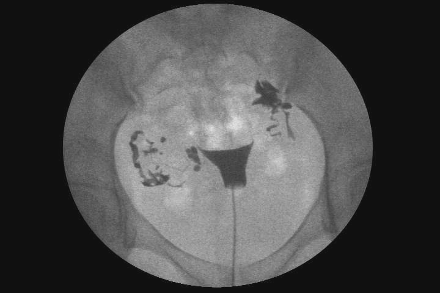
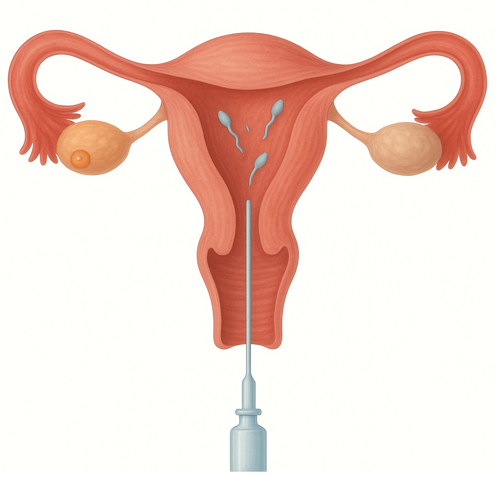
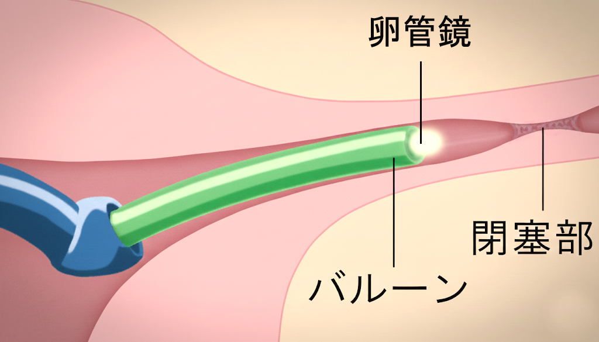
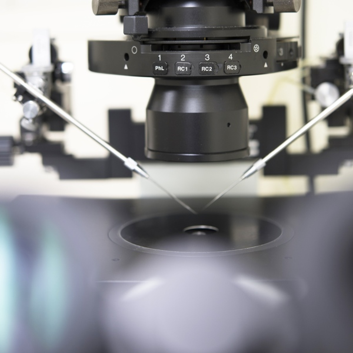
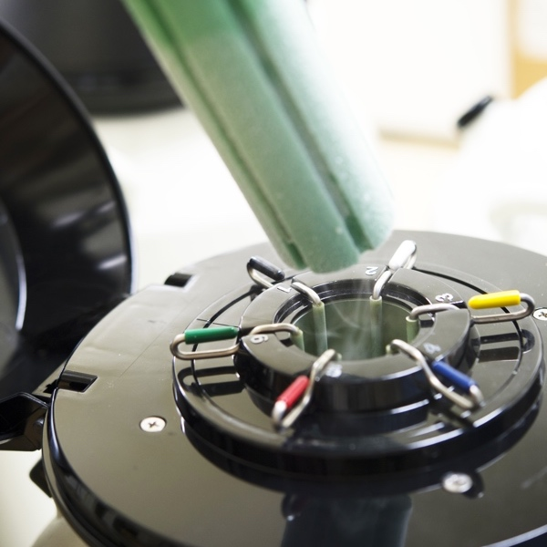
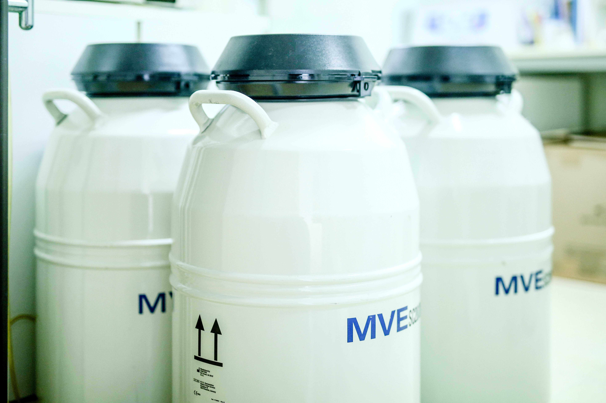
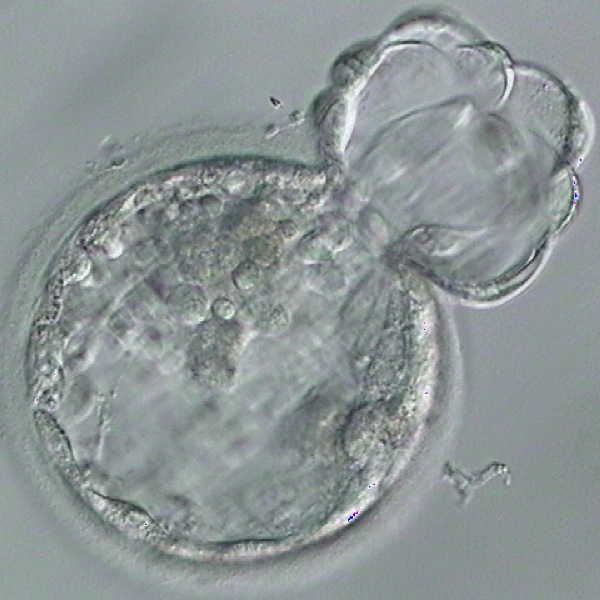
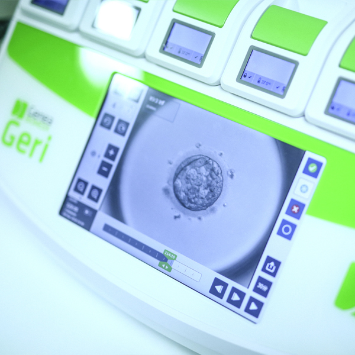

Reproduction不妊治療
高度生殖医療から、心のケアまで。
2004年より体外受精・顕微授精などの生殖補助医療（ART）を導入しています。
医師を中心に胚培養士、不妊カウンセラー、助産師など専門のスタッフが連携し、
患者様に適切な治療とサポートをご提供します。
2004年4月から2025年8月までの間に、のべ4,512人の新規患者様が来院され、一般不妊治療を含めて3,634件の妊娠例がありました。
このうち、体外受精・顕微授精などの高度生殖医療による妊娠は1,261件でした。
当院で行っている治療内容
患者様のお悩みや状態に合わせて、以下の幅広い検査・治療に対応しております。
一般不妊治療
- １不妊検査（ホルモン検査・子宮卵管造影・子宮鏡検査など）
- ２タイミング指導、排卵誘発
- ３人工授精
手術（日帰り手術）
- １ 卵管鏡下卵管形成術(FT)
- ２ 子宮鏡下手術(TCR)
生殖補助医療（ART）
- １ 体外受精
- ２ 顕微授精
- ３ 胚盤胞移植
- ４ 胚（受精卵）の凍結保存
- ５ 融解胚移植
不育症
- １ 不育症検査
- ２ 低用量アスピリン療法・漢方薬
不妊治療チームについて
当クリニックでは、医師をはじめ、胚培養士、不妊カウンセラー、助産師、看護スタッフがひとつの「チーム」となって患者様をサポートいたします。
日々のカンファレンスでお一人おひとりの治療経過を共有し、それぞれの専門的な視点から最善の医療を提供できるよう努めています。
診察室では聞きにくかったことや、治療に対するご不安などがありましたら、どのスタッフにでもご遠慮なくお声がけください。

培養室（ラボ）について
卵子や受精卵への負担をできるだけ減らすため、培養室は清潔な環境を保つクリーンルームになっており、処置はすべてクリーンベンチ内で行っています。
2024年には採卵室と培養室を新設し、より厳重な環境管理のもとで胚を丁寧に取り扱っています。胚の管理は電子システムで行い、取り違えなどのミスを防ぐ仕組みを整えています。

初診から治療への流れ
初診の段階で「何を調べ、どう判断し、次に何を選ぶのか」をできるだけ明確にし、「何をしているのか分からないまま時間が過ぎる」という不安を感じさせない診療を心がけています。
外来診療中に不安なことや分からないことがあれば、 遠慮なく医師やスタッフにお声がけください。
これまでの経過・治療歴・検査結果を確認し、「次に何を確認すべきか」を整理します。
・問診（治療期間・既往歴・月経・これまでの治療内容・ご希望など）
・持参資料（紹介状・検査データ・画像など）の確認
・無駄な検査を避け、目的を明確にした検査の提案
まずは不妊スクリーニング検査（基本検査）を行い、治療方針の決定に必要な情報を整理します。
・初期段階では、妊娠の可否や治療選択に直結する項目を中心に評価
・症状や超音波所見などに応じて、必要な検査を段階的に追加
・治療の経過に沿って、必要に応じた検査を行います
結果を並べるだけでなく、 妊娠を妨げている要因と次の一手を整理してお伝えします。
・結果の意味（何が良好で、どこが課題か）
・年齢・治療期間・身体的負担・時間的要素を踏まえた総合判断
・「急ぐ理由」または「待てる理由」を明確に説明
評価結果を踏まえ、複数の治療選択肢を提示し、 治療の見通しを共有します。
・タイミング療法
・人工授精（IUI）
・生殖補助医療（ART） 体外受精・顕微授精など
・手術療法
・「急ぐ理由」または「待てる理由」を明確に説明
医師の提案とご夫婦の希望をすり合わせ、疑問や不安を解消した上で、納得した方針で治療を開始します。
・疑問や不安の確認（「分からないまま始めない」）
・今後の通院スケジュールの概略提示
・次回までに必要な準備（説明・同意・費用の見通し）
不妊の原因と検査
不妊症の原因は多種多様です。 男女別に見ると、原因が男性側のみにあるカップルが4分の1、女性側のみにあるものが 5分の2、両方に原因があるものが4分の1です。不妊症は女性の病気と思われがちですが、 全体でみると男性側因子によるものは約半数になります。
主な原因
-
排卵因子（ホルモンの分泌異常など）
-
卵管因子（卵管が狭かったり、つまっている）
-
子宮因子（子宮の形の異常など）
-
頸管因子（頸管粘液量が低下し精子が子宮内へ貫通しにくくなるなど）
-
免疫的な異常（精子を障害する抗体の存在や膠原病など）
-
子宮や卵巣の病気（子宮内膜症や子宮筋腫など）
-
男性因子（精子の数が少ない、動きが悪いなど）
-
原因不明
＊不妊症の検査をしても、どこにも明らかな不妊の原因が見つからない場合があります。
不妊症の1/3を占めるといわれています。ただし、本当に原因がないわけではなく、検査では見つからない原因が潜んでいます。
主な不妊検査
-
内診・経腟超音波検査
内診台で行います。子宮や卵巣の異常を調べたり、卵胞の計測をします。 -
ホルモン検査
女性ホルモンは女性の月経周期によって変化しています。各時期に合わせて採血します。
１ 卵胞期（低温期）
卵胞刺激ホルモン（FSH） 黄体化ホルモン（LH） 乳腺刺激ホルモン（PRL）など
２ 排卵期
黄体化ホルモン（LH） 卵胞ホルモン（E2）など
３ 黄体期（高温期）
黄体ホルモン（P）など -
精液検査
男性側の検査です。３－４日間禁欲したあと、専用の容器に精液を取って顕微鏡で検査します。
精子の状態（精液量・精子濃度・精子の運動率・奇形精子の割合など）がわかります。
*精子の状態は体調により変化します。1回の検査で不良でも再検査では問題ないこともあるので数回検査をする場合もあります。 -
フーナーテスト
排卵日に性交をしてもらい、性交後に子宮の頸部の粘液を採取し、精子の状態を確認する検査です。精子と頚管粘液の相性がわかります。 -
クラミジア検査・淋菌検査
性行為感染症で、子宮の周囲に炎症を起こし卵管に癒着が起こり不妊症の原因になります。
*特にクラミジアは感染していてもほとんど自覚症状が無いのが特徴です。 -
子宮卵管造影検査
子宮の入り口から造影剤を注入し、X線写真を撮る検査です。卵管が開通しているかどうか、卵管が詰まっていたらその部位、卵管采の状態、子宮の大きさや形がわかります。 この検査により卵管が開通し妊娠する人もいます。
-
AMH（抗ミュラー管ホルモン）検査
抗ミュラー管ホルモン（AMH）は、卵巣の中にどのくらい卵子のもと（卵胞）が残っているかを調べる検査です。
このホルモンは、卵巣内の「発育途中の卵胞」から分泌され、加齢とともに徐々に低下していきます。そのため、卵巣の予備能力（卵巣年齢）を知る指標として役立ちます。
2024年6月から、AMH検査は一般不妊治療においても保険が適用されるようになりました。
検査の目的
・不妊治療の進め方（刺激法の選択や体外受精など治療方針）を決める参考として
・早発卵巣不全や多嚢胞性卵巣症候群（PCOS）の診断補助として -
抗精子抗体：自費 7,000円(税別）
精子の対する抗体で、女性の体内に入ってきた精子を異物とみなして精子の動きを止めたり、受精を障害します。 -
子宮鏡検査
子宮腔の中にポリープや粘膜下子宮筋腫などの病変があると、 受精卵が着床しにくくなり、不妊の原因となることがあります。
そのため、子宮腔の状態を詳しく調べるためには「子宮鏡検査」が有効です。細いカメラ（子宮鏡）を子宮の中に挿入し、 粘膜の状態やポリープの有無を直接確認します。
当クリニックでは、直径約3mmの軟性子宮鏡（ヒステロファイバースコープ）を使用しているため、 外来で麻酔を必要とせず、身体への負担が少ない検査が可能です。
一般不妊治療・手術療法
不妊症の検査で異常が見つかった場合、原因に対する治療を優先します。 原因がわからない場合、さらに詳しい精密検査を行い、原因が判明した場合、原因に対する治療を行います。 精密検査を行っても原因がわからない場合は、まずタイミング指導を行いますが、それで妊娠にいたらない場合もあります。 基本的には原因に対する治療を行いますが、同じ治療を 4～6 か月行って妊娠に至らない場合には、人工授精や体外受精などに治療をステップアップします。
-
タイミング指導
基礎体温・超音波による卵胞計測・頸管粘液・尿検査によるホルモンチェックなどにより排卵日を特定し、 性交渉のタイミングを決定することです。 -
排卵誘発
・クロミフェン療法
生理の3-5日目から5日間内服します。軽度の排卵障害（一度無月経）の方が対象になります。
・ゴナドトロピン療法
生理の3日目ごろから1週間ほど注射を行います。クロミフェン療法より妊娠率は高いですが、 多胎妊娠や、卵巣がはれたり（卵巣過剰刺激症候群）することがあります。 -
人工授精 (IUI)
タイミング法で妊娠に至らない場合や、軽度の男性因子・性交障害がある場合に実施します。 採取した精液を洗浄・濃縮し、排卵期に子宮内へ注入します。
【実施時期】
排卵前日または当日に行います。
【施行回数の目安】
年齢・AMHにより異なりますが4～6回で妊娠に至らない場合、 体外受精（IVF）へのステップアップを検討します。
【精子処理（単純密度勾配法）】
成熟精子の細胞密度は1.11～1.12 g/mLに対し、未熟・死滅精子は1.09 g/mLと低い、 1.10 g/mLに調整された密度勾配担体（ピュアセプション®）の上に精液を重層 → 遠心分離 → 成熟精子のみが担体下に沈殿 → これを回収してAIHに使用。
※ピュアセプション®：ART専用に開発された、親水性シランを共有結合させたコロイド状シリカ粒子。
-
手術療法 (日帰り手術)
-
卵管鏡下卵管形成術 (FT)
卵管の通り道が狭くなったり、詰まっている場合に行う治療です。
子宮の入り口から非常に細いカテーテルを挿入し、 卵管の中を直接確認しながら、詰まりの原因となっている部分をバルーンで丁寧に拡げていきます。
また、内視鏡（卵管鏡）を用いて卵管内の上皮（粘膜）の状態を直接観察できる点も本治療の大きな利点です。
卵管内が受精卵の発育に適した環境であるか、 あるいは不良な状態であるかを視覚的に評価することで、 術後の自然妊娠の可能性や、 体外受精（ART）への早期ステップアップなど、 以後の最適な治療方針を客観的データに基づいて決定することが可能となります。
※卵管の子宮と反対側に近い部位で閉塞や狭窄している場合や卵管水腫の方はこの手術は適応となりません。FT治療は開腹手術と異なり、体への負担が少なく、日帰りで行えるのが大きな特徴です。
ただし、閉塞の程度や位置、上皮の状態によって治療効果には個人差がありますので、診察にて適応を判断いたします。
-
子宮鏡下手術 (TCR)
TCR（Trans Cervical Resection：子宮鏡下手術）は、子宮頸管から細い内視鏡（子宮鏡）を挿入し、 子宮腔内のポリープや粘膜下子宮筋腫、癒着などを直接観察しながら切除する低侵襲の手術です。
身体への負担が少なく、術後の回復が早いのが特徴です。 子宮腔内の病変を除去することで、月経異常の改善や不妊症の原因となる着床障害の解消が期待できます。
生殖補助医療 (ART)
生殖補助医療とは卵子と精子両方を操作して行う高度な技術を使った不妊治療を指します。体外受精・胚移植(IVF-ET)、顕微授精(ICSI)、胚凍結、融解胚移植などが含まれます。
- 体外受精-胚移植（IVF-ET）
成熟した卵子を卵巣から取り出し、卵子と精子を体外で受精させ、細胞分裂したことを確認してから子宮に胚を移植します。
*当クリニックでは、着床直前まで発育した胚盤胞移植を原則に行っています。
体外受精は、排卵誘発→採卵→媒精→受精の確認→胚培養→(胚凍結)→胚移植→妊娠の診断の順に行います。
一度に数個の卵子を採取するため、当クリニックでは基本的に注射による排卵誘発を行っています。
＊排卵誘発剤を使用しない自然周期で行う場合もあります。
静脈麻酔下（眠った状態）で、膣から超音波の画像を見ながら採卵針で卵を採取します。約10分で終了します。
(通常4～5個の卵子を採取します。)
夫の精子を採ってもらい、精子を調整します。 卵子に調整した精子を加え、卵管に近い環境で培養し、受精させます。 受精がうまくいけば、受精卵は2日目には3-4分割、3日目には6-8分割ぐらいになります。5日目には胚盤胞といって着床直前の状態になります。
採卵後に新鮮胚を移植するより、胚を一旦凍結し子宮内膜の着床環境を整えてから移植した方が、着床率（妊娠率）が高いことがわかってきました。 当クリニックでは胚を一旦凍結し、融解胚移植を原則としています。
採胚移植チューブを用いて1個の受精卵を子宮腔内に移植します。約10分で終了します。胚移植後約30分間休んでもらいます。
*2008年からは、胚盤胞移植を原則とし、移植胚数は1個に制限しています。
胚移植後は、着床・妊娠の維持を促すためホルモン投与を行い、 胚移植後、約10日後に妊娠の判定を行います。
【方法】
採卵された卵子をヒアルロニダーゼ(ヒアルロン酸を分解する酵素)を用いて、 裸化(卵子の周りに付着している顆粒膜細胞を除去)し、顕微授精を行います。

当クリニックでの凍結方法は、新しい凍結技術である「ガラス化法」を採用しています。 (凍結の際には、細胞に生じる低温障害を防止する凍結保護剤として、エチレングリコール、ジメチルスルフォンキシド、スクロースなどを含んだ溶液を使用します。 凍結処理後は、-196℃の液体窒素中で急速凍結し保存します。融解の際には急速に加温して、培養液に戻して培養を再開します。)


先進医療・オプション
-
レーザーアシステッドハッチング (LAH)
妊娠率の向上のため、高齢や凍結操作により硬くなった透明帯の一部を最新のレーザー装置により薄くし、 ハッチングを補助する操作（レーザーアシステッド ハッチング:LAH）を行っています。
※ハッチング（孵化）とは
胚は透明帯という膜に覆われていますが、その膜を破ってから着床します。これをハッチング（孵化）と呼びます。 -
タイムラプス培養器
当クリニックでは全症例、タイムラプス機能のついた培養器で胚の培養しております。
※タイムラプスとは
培養器個々に顕微鏡と内蔵カメラとを備え、胚の画像を5分毎の一定間隔で動画として撮影します。 撮影はどの断面からでも観察ができるように、11の階層で撮影されます。 観察は培養器内で自動的に行われるので、胚の確認目的で培養外に胚を出す必要がなく、安定した培養環境で胚の観察が行えます。 患者様も胚の成長過程を動画で見ることが可能です。
不妊カウンセリング外来
不妊治療は短期間の治療で必ず成功(妊娠)するとは限りません。
治療に対する不安・ストレスは相当なものと思われます。不妊治療の情報を詳しく説明し、安心して治療を受けられるようサポートしていきたいと思います。
- 不妊カウンセラー
当クリニックでは2名の看護師が日本不妊カウンセリング学会で養成・認定を受け、活動しています。 -
不妊カウンセリング外来診療日程
カウンセリングをご希望の方は外来、受付窓口またはお電話でご相談ください。
TEL : 0897-33-1135
*完全予約制となっています。費用は3,000円/30分（税別）です。
治療実績
当クリニックの2015年〜2024年における治療実績（初診患者数・妊娠数、人工授精、体外受精・顕微授精）は以下の通りです。
初診患者数と妊娠数(治療全体)
| 年度 | 2015 | 2016 | 2017 | 2018 | 2019 | 2020 | 2021 | 2022 | 2023 | 2024 |
|---|---|---|---|---|---|---|---|---|---|---|
| 初診数 | 278 | 231 | 225 | 216 | 239 | 217 | 212 | 272 | 188 | 210 |
| 妊娠数 | 207 | 234 | 209 | 178 | 195 | 172 | 188 | 215 | 229 | 214 |
人工授精の妊娠率
| 年度 | 2015 | 2016 | 2017 | 2018 | 2019 | 2020 | 2021 | 2022 | 2023 | 2024 |
|---|---|---|---|---|---|---|---|---|---|---|
| 回数 | 257 | 294 | 269 | 300 | 298 | 331 | 331 | 405 | 483 | 333 |
| 妊娠数 | 26 | 49 | 37 | 24 | 35 | 22 | 29 | 31 | 49 | 31 |
| 流産数 | 6 | 8 | 7 | 5 | 7 | 5 | 4 | 5 | 13 | 3 |
| 妊娠率(%) | 10.1 | 16.3 | 13.8 | 8.0 | 10.6 | 6.6 | 8.8 | 7.7 | 10.1 | 9.3 |
体外受精・顕微授精の胚移植あたりの妊娠率
| 年度 | 2015 | 2016 | 2017 | 2018 | 2019 | 2020 | 2021 | 2022 | 2023 | 2024 |
|---|---|---|---|---|---|---|---|---|---|---|
| 平均年齢 | 36.8 | 35.5 | 36.8 | 37.2 | 36.9 | 36.5 | 36.7 | 36.3 | 35.3 | 35.5 |
| 採卵 | 176 | 203 | 173 | 192 | 161 | 167 | 187 | 200 | 209 | 221 |
| 胚移植 | 157 | 203 | 171 | 198 | 172 | 150 | 184 | 197 | 237 | 216 |
| 妊娠数 | 73 | 76 | 70 | 72 | 67 | 67 | 79 | 94 | 109 | 107 |
| 流産数 | 22 | 11 | 14 | 16 | 17 | 13 | 13 | 23 | 35 | 23 |
| 妊娠率(%) | 46.5 | 37.4 | 40.9 | 36.4 | 39.0 | 44.7 | 42.9 | 47.7 | 46.0 | 49.5 |
不育症
不妊症と似た言葉に不育症というのがあります。 それは、妊娠はするけれども、流早産を繰り返し生児が得られない状態で、流産を2回繰り返すと「反復流産」といい、3回以上になると「習慣性流産」といいます。
- 流産について
妊娠した女性が流産する確立は意外と高く、30歳までは8-15%、35歳で20%、40歳では40%、42歳では50%以上といわれています(Andersen AMN et al., 2000)。
流産の確率が20%とすると確率的には2回流産する確率が4%、3回流産する確立は0.8%で健常な方でも約100人に1人は3回流産すると考えられます。
*当クリニックでは原則的には2回流産を繰り返した方に不育症のスクリーニング検査を勧めています。 -
当クリニックで行っている検査
-
子宮の形態検査(子宮奇形・子宮筋腫・子宮内腔癒着・頸管無力症など)
1超音波検査
2子宮卵管造影(HSG)
3子宮ファイバースコープ -
内分泌検査(黄体機能異常、甲状腺機能異常、高プロラクチン血症、糖尿病など)
1 下垂体機能検査(LH FSH プロラクチン)
2 卵巣機能検査(E2 プロゲステロン(黄体期中期)など)
3 甲状腺機能検査 糖尿病検査(血糖値) -
染色体検査
1 夫婦の染色体検査(転座、ロバートソン転座など)
2 流産した児(絨毛)の染色体検査 -
免疫学的検査(抗リン脂質抗体症候群、膠原病)
1 抗核抗体
2 抗リン脂質抗体(ループスアンチコアグラント、抗カルジオリピン・β2GPI複合体抗体など)
3 抗SS-A抗体など -
凝固異常
1 aPTT PT
2 AT-III
3 第XII因子活性
4 プロテインS -
当クリニックで行っている治療
-
低用量アスピリン療法
血液が固まりやすい方(易血栓性患者)に使用しています。
*不育症患者の中にはヘパリン(抗凝固剤)が必要な方もおられます。 当クリニックではヘパリン療法は行っていませんので必要な場合は可能な施設に紹介させていただきます。 -
漢方薬
体質改善のため、漢方薬を使用することがあります。 -
子宮鏡手術
子宮粘膜下筋腫、子宮内膜ポリープなどの場合に行います。
不育症の原因も、不妊症と同様多種多様です。当クリニックで行っている一次スクリーニング検査を原因別に示します。
費用について
保険診療の場合
（患者様負担額：30%）2022年4月〜
- 一般不妊治療管理料: 750円 (3ヶ月に1回)
- 人工授精: 5,460円
- 生殖補助医療管理料1: 900円 (体外受精周期毎)
- 採卵基本料: 9,600円
- 採卵数による加算:
1個 +7,200円 / 2〜5個 +10,800円 / 6〜9個 +16,500円 / 10個以上 +21,600円
- 体外受精管理料: 12,600円
- 顕微授精管理料:
1個 +14,400円 / 2〜5個 +20,400円 / 6〜9個 +30,000円 / 10個以上 +38,400円
- 受精卵胚培養管理料:
1個 13,500円 / 2〜5個 18,000円 / 6〜9個 25,200円 / 10個以上 31,500円 - 胚盤胞:
1個 +4,500円 / 2〜5個 +6,000円 / 6〜9個 +7,500円 / 10個以上 +9,000円
- 胚凍結保存管理料:
1個 15,000円 / 2〜5個 21,000円 / 6〜9個 30,600円 / 10個以上 39,000円 - 胚凍結保存維持管理料:
10,500円 （保存期間1年経過後）
- 新鮮胚移植: 22,500円
- 凍結融解胚移植: 36,000円
- AHA (アシステッドハッチング): 3,000円
自費診療の場合
（患者様負担額：100%）2022年4月〜
＊保険診療の点数の改定により、自費診療の費用も変更になります。
不妊治療費等助事業について
愛媛県内の全市町村で不妊治療費等の助成事業を行っております。対象となる条件や時期等は自治体によって異なります。 事前に各自治体のホームページをご確認いただき、各市町村の窓口までお問い合わせ、ご相談ください。
新居浜市不妊治療助成事業西条市不妊治療助成事業
今治市不妊治療助成事業
高額療養費制度の多数回該当について
高額療養費制度の多数回該当につきましては、都合により対応が困難なため、令和8年3月31日をもちまして当院での適用を終了させていただきます。
大変ご不便をおかけいたしますが、多数回該当の対象に当たる場合は、ご自身で健康保険のお手続きをお願いします。お手続きにつきましては保険者へご確認お問い合わせください。
＊多数回該当とは・・・療養を受けた月以前1年間に、3ヶ月以上の高額療養費の支給を受けた（限度額適用認定証を使用し、自己負担限度額を負担した場合も含む）場合、4ヶ月目から多数回該当となり、自己負担限度額がさらに軽減されます。